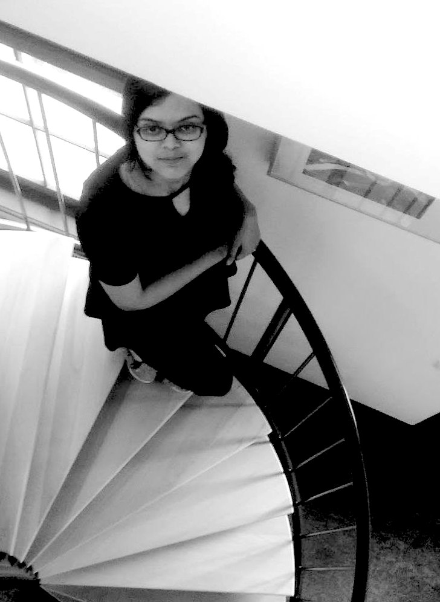

Hi. I'm Sudeshna.
UX Researcher • Anthropologist • PhD
With extensive experience in designing and conducting qualitative and quantitative research, I specialize in applying ethnography and other anthropological methods to recognize the needs, wants and the broader circumstances of people and translating them into actionable insights which stakeholders can relate to.
Learn about what I do